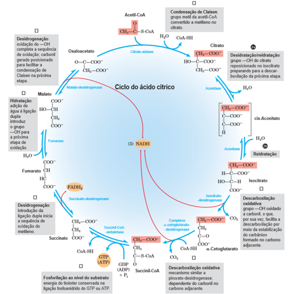

<ion-header>
    <ion-navbar color="primary">
      <ion-buttons left>
        <button ion-button icon-only menuToggle>
          <ion-icon name="menu"></ion-icon>
        </button>
      </ion-buttons>
      <ion-title>VISÃO DETALHADA DO <br> CICLO DE KREBS</ion-title>
    </ion-navbar>
  </ion-header>


<ion-content padding>

  <h6>DETALHAMENTO DO CICLO DE KREBS </h6>
  

</ion-content>
